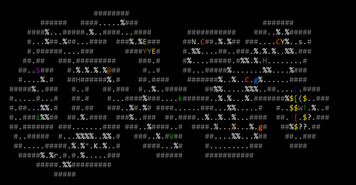

All stone dragons feature special stone breath attack, which deals non-elemental damage to the PC, and can destroy items not made of mithril, adamantium, eternium, truesilver, or crystal. There does not appear to be any way to reduce the stone damage. All the dragons are also immune to acid, cold, and lightning, they bounce or absorb all magic bolts (including fire bolt), and drop pile of trasure when killed. Great stone wyrms in addition cast confusion, cone of cold, and darkness.

| Level: 1, DV: 40, PV: 80, Hits: 1400, Attacks: 3, Damage: 9d20+14, Speed: 135. |
 Katharamandus, the stone dragon king drops Bergbringer, the stone heart when killed. When equipped in the tool slot it grants bad luck and resistance to petrification, stunning, and death rays.
Using the Stone Heart causes an earthquake on the current level at the cost of 1 Mana. If the PC has a base Mana score of 1, activating it costs 1 Toughness. If the PC has base Mana and
Toughness scores of 1, it cannot be activated. If it is used while the Chaos Orb of Elemental Fire is in the PC's inventory, it will cause volcanoes to spawn throughout the Drakalor Chain,
opening up the Volcano quest and the Ultimate Dungeon.
Katharamandus, the stone dragon king drops Bergbringer, the stone heart when killed. When equipped in the tool slot it grants bad luck and resistance to petrification, stunning, and death rays.
Using the Stone Heart causes an earthquake on the current level at the cost of 1 Mana. If the PC has a base Mana score of 1, activating it costs 1 Toughness. If the PC has base Mana and
Toughness scores of 1, it cannot be activated. If it is used while the Chaos Orb of Elemental Fire is in the PC's inventory, it will cause volcanoes to spawn throughout the Drakalor Chain,
opening up the Volcano quest and the Ultimate Dungeon.
---------------------------- stone heart "Bergbringer" ----------------------- Weight: 1000s When used in melee combat it grants a -10 bonus to hit and causes 1d10 points of damage. When used as a missile it grants a -10 bonus to hit and causes 3d10 points of damage. It grants bad luck. It grants resistance to petrification. It grants resistance to stunning. It grants resistance to death attacks. (use to cause earthquake, corrupt to spawn volcanoes) |